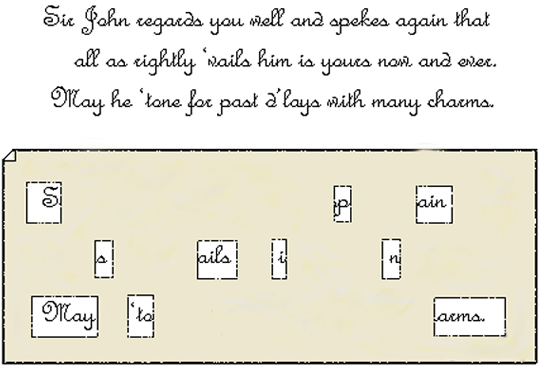

Решётка Кардано
Джероламо Кардано
Что такое решётка Кардано?
Решётка Кардано — инструмент шифрования и дешифрования, представляющий собой специальную прямоугольную (в частном случае — квадратную) таблицу-карточку, часть ячеек которой вырезана.
Как это выглядит?
Текст записки: Сэр Джон высоко ценит Вас и снова повторяет, что все, что доступно ему, теперь ваше, навсегда. Может ли он заслужить прощение за свои прежние промедления посредством своего обаяния.
Шифрованное послание: В мае Испания направит свои корабли на войну.
Откуда появилось?
В 1550 году итальянский математик Джероламо Кардано предложил простую решётку для шифрования сообщений. Он планировал маскировать сообщения под обычное послание, так что в целом они не были полностью похожи на шифрованные. Решётка содержит отверстия для отдельных символов, а сообщение заполняется набором букв или цифр и представляет собой криптограмму. Одна из разновидностей решётки Кардано — вращающаяся решётка или сетка, в основе которой лежит шахматная доска, которая использовалась в конце XVI века. Вращающаяся решётка снова появилась в более сложной форме в конце XIX века, но к этому времени какая-либо связь с Кардано осталась только в названии.
Суть простыми словами
Решётка — квадрат N×N клеток, некоторые из которых вырезаны. Клетки должны иметь такой размер, чтобы в каждую помещалась ровно одна буква. Вырезанные клетки должны располагаться таким образом, чтобы никакие две из них не оказывались в одном и том же месте при поворотах решетки. Чтобы зашифровать сообщение, нужно разместить решётку на бумаге и вписать часть текста в вырезанные клетки, затем повернуть решетку на 90° и вписать следующую часть и т. д. После этого в оставшиеся пустыми места на бумаге нужно вписать произвольные символы.
Конструктор решёток Кардано
Алгоритм шифрования
Решётка квадратной формы
Клетки в решётке вырезаются таким образом, чтобы при её поворотах можно было записать по букве в каждое место на бумаге, и не было таких пар вырезанных клеток, которые оказываются на одном и том же месте.
Пример:
| Шаги | Описание | Изменения | ||||||||||||||||||||||||||||||||||||
|---|---|---|---|---|---|---|---|---|---|---|---|---|---|---|---|---|---|---|---|---|---|---|---|---|---|---|---|---|---|---|---|---|---|---|---|---|---|---|
| 1 | Берём фразу, которую хотим закодировать | Security is an important thing. Безопасность - это важная вещь. | ||||||||||||||||||||||||||||||||||||
| 2 | Размещаем решётку на бумаге и вписываем часть текста в вырезанные клетки |
|
||||||||||||||||||||||||||||||||||||
| 3 | Поворачиваем решётку на 90° и вписываем следующую часть |
|
||||||||||||||||||||||||||||||||||||
| 4 | Поворачиваем решётку на 180° и вписываем следующую часть |
|
||||||||||||||||||||||||||||||||||||
| 5 | Поворачиваем решётку на 270° и вписываем следующую часть |
|
||||||||||||||||||||||||||||||||||||
| 6 | Итог |
|
Шифратор
Результат:
1
Зашифруйте сообщение чтобы увидеть результат
Дешифратор
Результат:
Дешифруйте сообщение чтобы увидеть результат